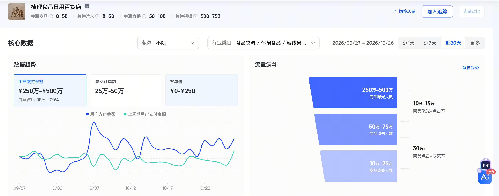
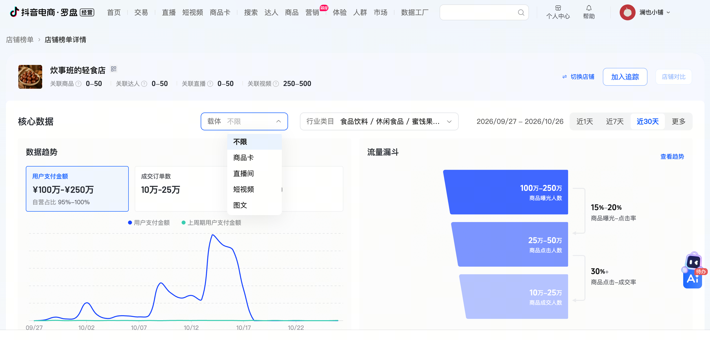
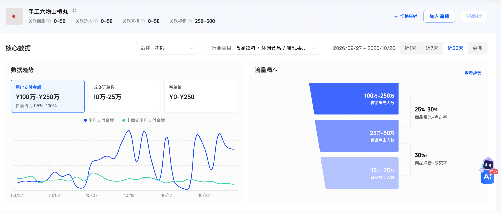
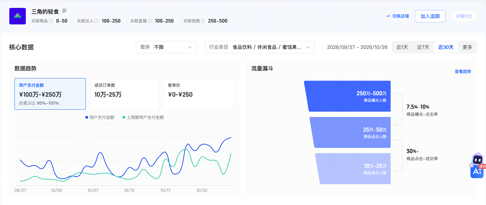
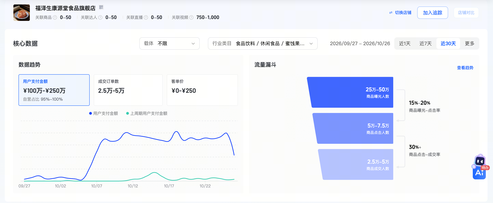
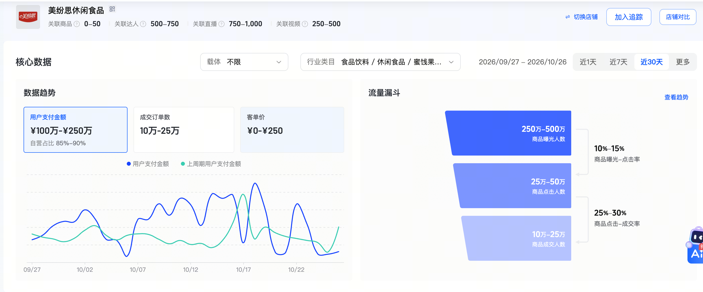
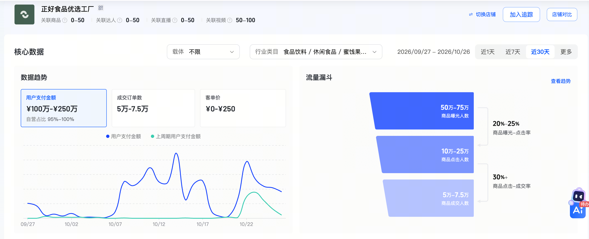
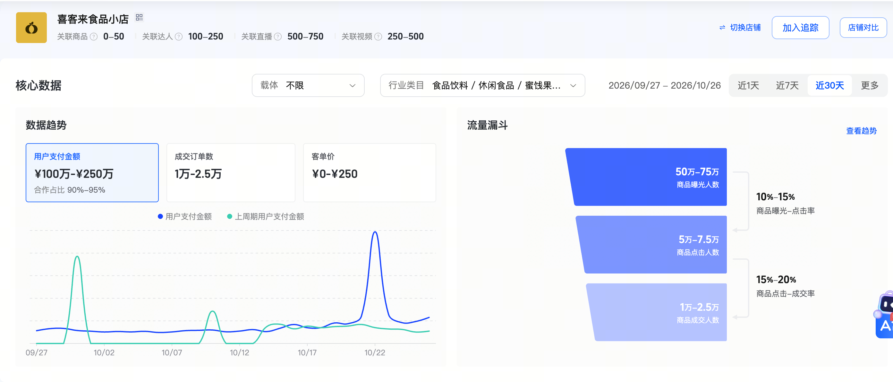
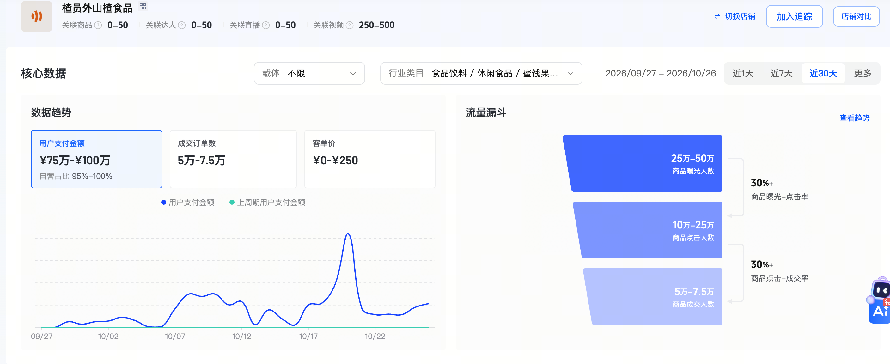
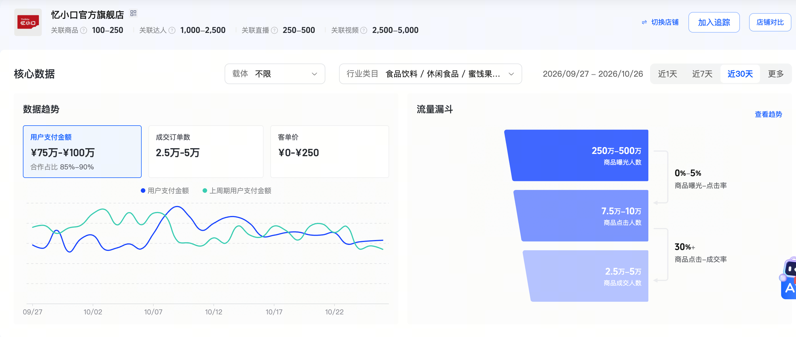

楂理食品日用百货店
直播成交占比65%—70%
抖音电商罗盘，山楂类制品，2026/09/27—10/26，载体不限。比较的是店铺在所选类目、周期下的商品曝光人数，不是视频播放量或商品曝光次数。
| 店铺 | 商品曝光人数 | 同一尺度区间（0—500万） |
|---|---|---|
| 澜也小铺 | 3.27万 | |
| 楂理食品日用百货店 | 250万—500万 | |
| 炊事班的轻食店 | 100万—250万 | |
| 手工六物山楂丸 | 100万—250万 | |
| 三角的轻食 | 250万—500万 | |
| 福泽生康源堂食品旗舰店 | 25万—50万 | |
| 美纷思休闲食品 | 250万—500万 | |
| 正好食品优选工厂 | 50万—75万 | |
| 喜客来食品小店 | 50万—75万 | |
| 楂员外山楂食品 | 25万—50万 | |
| 忆小口官方旗舰店 | 250万—500万 |
澜也商品曝光人数为3.27万，10家同行样本分别落在25万—500万的区间内，最低一档也高于我们当前的触达量。商品准备之后，需要持续增加有效触达，并把内容与商品购买承接起来。
这些是头部样本，不是所有商家的平均水平。保留平台原始区间，不计算精确均值，不把曝光差距直接换算成销量，也不能仅凭截图判断付费与自然流量构成。图形仅表示区间位置，未取中点。
澜也数值来自用户提供的同周期店铺榜单截图；10家数值来自各店铺详情中的商品曝光人数。点击第二页“查看10家明细与来源”可查看同行核心数据原图。
先围绕办公、居家日常吃零食的成年人，回答“口感怎样、分量多少、怎么选、什么时候吃”。用真实产品体验建立识别，后续根据点击、咨询和订单反馈拓展人群。首期不以儿童功效、减脂或健康承诺建立定位。
| 首期建议 | 对应需求与选题 | 选择理由 |
|---|---|---|
| 六物山楂丸 | 想吃一点酸甜小食、随手携带与分享；展示拆包、大小、质地和分量 | 已有资料可支持盒装小份独立包装展示，适合建立基础试吃内容 |
| 经典果丹皮 | 寻找熟悉的山楂味；比较形态、口感、包装与分享方式 | 消费者容易理解，能承接经典风味、选购答疑和不同包规需求 |
| 烤山楂 | 想尝试不同于丸、片的山楂小食；展示实物与真实试吃 | 与前两款形成体验差异，为内容提供可比较的方向 |
主推选择参考现有货盘与包规方案，不等于三款已锁定为销售主力。发布前复核在售库存、实物、当期价格和履约成本；每款先围绕一个主推规格组织内容，减少同条视频中的选择负担，其他规格由商品页承接。
购买理由优先落到口感、份量、便携分享和真实产品差异。原料、工艺、产地等只能引用对应商品已核实的资料，不把整条产品线概括为有机、零糖或具有功效。
以资源可用之日为起点，建议用1—2周完成首批脚本、实物样品、账号权限和拍摄安排，同时招聘与试拍。招聘期间由刘帅提供脚本，采购小批量代拍衔接首批发布，不等待岗位完全到位才启动。实际上线日取决于首批交付；8周从正式发布起算。
首批代拍建议5—10条，按100—300元／条估算约500—3000元，属于招聘过渡的备选费用，不默认计入人力预算，也不追加整月外包套餐。自有人员到岗后逐步交接拍摄、剪辑和素材归档。
| 节点 | 建议产出 | 需要形成的判断 |
|---|---|---|
| 第2周 | 累计12—15条；覆盖3款建议主推品及多种消费者问题 | 哪类内容带来有效商品点击；记录曝光、点击、咨询与下单基线 |
| 第4周 | 累计约30条；形成至少2个优先迭代方向 | 同一方向复拍后的点击和成交能否改善；分平台、分商品看获客成本 |
| 第8周 | 累计60—75条；争取形成1—2套有重复成交记录的内容表达 | 哪些方向继续增加产能和预算，哪些继续修改；汇总退款、贡献与下一阶段安排 |
以上是建议推进目标，不承诺每款必出爆款或固定GMV。数据不足时保留“样本不足”，不以一条偶发订单判定有效。
商品触达：商品曝光人数；兴趣：商品点击人数与点击率；购买：有效订单与点击后成交；投入：广告消耗、获客成本；质量：退款及订单贡献。比较相同平台、相同口径、相近周期，分别保留自然与付费数据中可获取的部分。
先用首批数据建立自己的基线，再确定下一轮提升目标。低效素材暂停或修改，账号内容经营持续推进；测试的是内容方向、表达和协作效率。
来源：用户提供的抖音电商罗盘店铺详情截图。统计周期为2026年9月27日—10月26日，类目为山楂类制品，载体筛选不限。本次10家详细样本按店铺计数，未按GMV加权，不能代表整个行业结构。
| 店铺 | 用户支付金额 | 经营方式 | 第一成交载体 | 短视频占比 |
|---|---|---|---|---|
| 楂理食品日用百货店 | 250万—500万元 | 自营95%—100% | 直播65%—70% | 未展示 |
| 炊事班的轻食店 | 100万—250万元 | 自营95%—100% | 直播60%—65% | 未展示 |
| 手工六物山楂丸 | 100万—250万元 | 自营95%—100% | 直播60%—65% | 未展示 |
| 三角的轻食 | 100万—250万元 | 自营95%—100% | 直播55%—60% | 未展示 |
| 福泽生康源堂食品旗舰店 | 100万—250万元 | 自营95%—100% | 直播75%—80% | 未展示 |
| 美纷思休闲食品 | 100万—250万元 | 自营85%—90% | 直播90%—95% | 5%—7.5% |
| 正好食品优选工厂 | 100万—250万元 | 自营95%—100% | 直播65%—70% | 30%—35% |
| 喜客来食品小店 | 100万—250万元 | 合作90%—95% | 直播45%—50% | 40%—45% |
| 楂员外山楂食品 | 75万—100万元 | 自营95%—100% | 直播85%—90% | 10%—15% |
| 忆小口官方旗舰店 | 75万—100万元 | 合作85%—90% | 短视频85%—90% | 85%—90% |










达人合作可以成为主要经营模式，但是否适合本项目，仍需结合产品毛利、费用与可持续的达人供给判断。当前建议以自营建设为主轴，达人同步合作，围绕匹配的商品、人群与节点争取增量。
达人合作的排期、内容和曝光需要与合作方协调；自营按照自己的经营节奏持续调整。达人反馈帮助自营优化，自营积累的卖点和素材也可支持后续合作。
达人侧计入佣金、固定合作费、样品、物流与退款。自营侧计入内容、人力、广告、履约、平台扣费与退款。自营不天然意味着低成本，达人成交也不天然意味着无利润。
账号、素材授权、数据与实际执行责任需在合作前明确。外部合作效果按商品、场次和内容分别复盘。
| 维度 | 自有拍剪 | 外包代拍 |
|---|---|---|
| 产品理解 | 持续接触产品与用户反馈，积累经验 | 每批需传递产品信息，依赖团队理解与稳定配合 |
| 调整速度 | 按刘帅调整后的脚本及时补镜头、重剪与重拍 | 需要协调排期，修改范围按合作约定 |
| 真实场景 | 便于记录上新、试吃与日常场景 | 适合集中拍摄，临时需求另行协调 |
| 经验积累 | 持续参与复盘，积累有效表达 | 需要稳定合作与共享反馈，避免重复磨合 |
| 投入方式 | 固定人力，需要持续任务和明确管理 | 按批次投入，可补充专项与阶段性产能 |
自有拍剪暂按1万元／月预估；外包按用户提供的100—300元／条参考价测算。30条为0.3万—0.9万元，60条为0.6万—1.8万元，均不含投放。
外包低价档可能低于自有人员账面费用。配置自有人员的主要理由是日常配合、迭代速度与经验积累，不能概括为招人一定更便宜。
每月30条可用成片为基础安排，稳定后提升至45—60条，包含有效选题的迭代版本。同一条跨平台发布不重复计为两条，轻微改字幕、换音乐不作为独立生产量。刘帅负责脚本与内容方向，拍剪按脚本拍摄、剪辑、反馈补拍与归档；可视工作量协助发布和账号日常维护。其余运营及投放实际执行仍由刘帅负责。外包另明确修改轮次、交付时限、原片／成片授权与交接。
| 方案 | 人力／内容每月 | 投放额度每月 | 每月合计 | 两个预算月 |
|---|---|---|---|---|
| 自有拍剪 | 约1万元 | 2万元 | 约3万元 | 约6万元 |
| 外包30条 | 0.3万—0.9万元 | 2万元 | 2.3万—2.9万元 | 4.6万—5.8万元 |
| 外包60条 | 0.6万—1.8万元 | 2万元 | 2.6万—3.8万元 | 5.2万—7.6万元 |
以上为申请测算，非已批准支出。人力按用户提供的1万元／月暂估；若仅为税前工资，公司承担的其他用人成本应另核。设备、样品、道具、专项制作与投放服务费未包含在6万元中，按实际需要列明审批。两个预算月是预算口径，不与8个自然周精确等同。
初始抖音、小红书各1万元，每个平台分批投入，在批准范围内按效果动态分配；不以花完额度为任务。两平台分别记录消耗、成交和退款，不直接混用不同归因口径的ROI。
追加投入看成交能否重复、退款后的订单贡献是否可接受，以及加预算后的表现。平台ROI不直接等于经营利润，还需结合商品、履约、平台、内容和人力等完整成本。
每款主推规格单独算：退款后实收，减去商品、实际履约、平台扣费及相关订单费用，得到广告前订单贡献。获客成本应低于这部分贡献，并留出人力、内容、税费及售后成本的空间；等于订单贡献时，只代表订单层面接近保本，不代表项目整体保本。
月度再汇总退款后销售贡献，扣除广告、固定人力、内容及其他实际费用。收入与费用按同一订单和周期核对，避免退款、平台费或佣金重复扣减。不同规格毛利空间不同，不以统一ROI作为全店追加标准，也不直接用预算乘预估ROI承诺GMV。
每周反馈实际触达、点击、订单、消耗与退款；每月说明投入金额、重复成交的内容方向、订单贡献和扣除固定成本后的结果。早期可按明确额度投入学习，但低效素材不持续消耗。
刘帅负责选品、内容策划与全部视频脚本、账号经营、活动、达人合作、投放实际执行与成本复盘。拍剪负责拍摄、剪辑、按反馈补拍与素材归档；最多视工作量协助视频发布和账号日常维护。品牌团队与电商先对齐产品事实、视觉底线及重要主张，日常开头、节奏、口语、镜头与购买引导由电商根据数据调整；涉及新功效、认证或品牌重要表达时再协同核实。
以人员和账号就绪后的正式启动为起点。第3—4个月建议加入主题直播，先围绕上新、试吃和活动开展，结合主播、场控、货盘、排期与预算逐步增加频率。自营直播可使用代播执行，我方保留账号、商品和经营决策主导权。
先做好平台店铺会员、购买反馈与需求记录，再逐步开展用户分层、新品体验、补货提醒、组合推荐与会员活动。微信等自有触点通过平台允许的方式与用户自愿选择建设，不以统一将各平台消费者导向站外为前提。
复购与关联购买的目标是降低重复获客依赖、提高长期贡献，并需计入服务、人力与权益成本；不承诺私域天然提高利润。
直播、用户运营、KOC／KOL及新增达人固定合作费按阶段另行规划，不计入首期约6万元人力与投放测算。外部合作按预算和适配程度逐步加入。